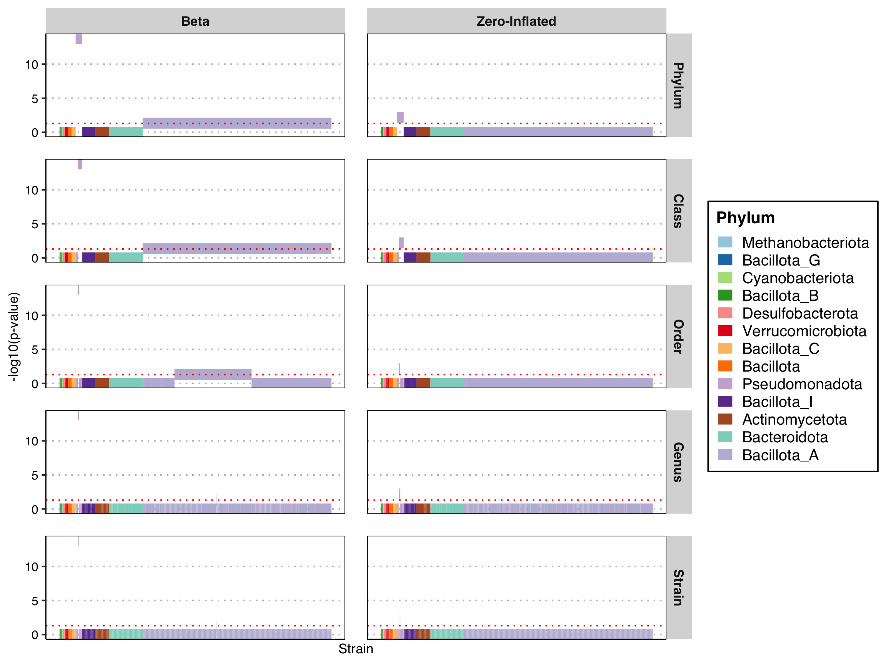
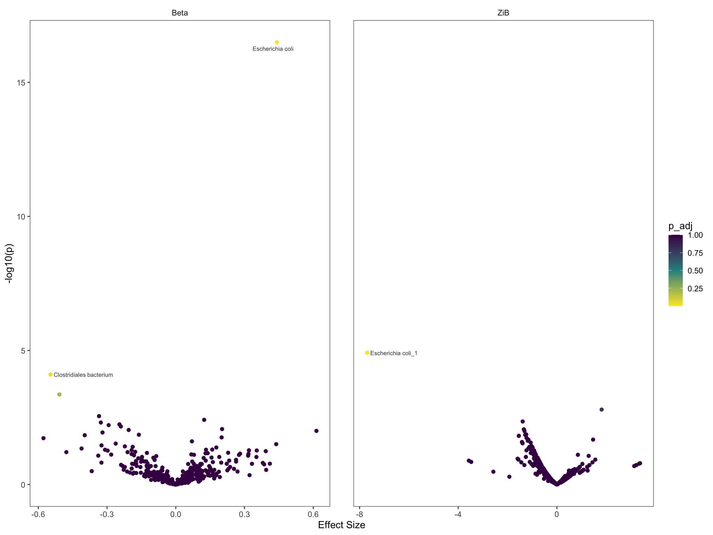
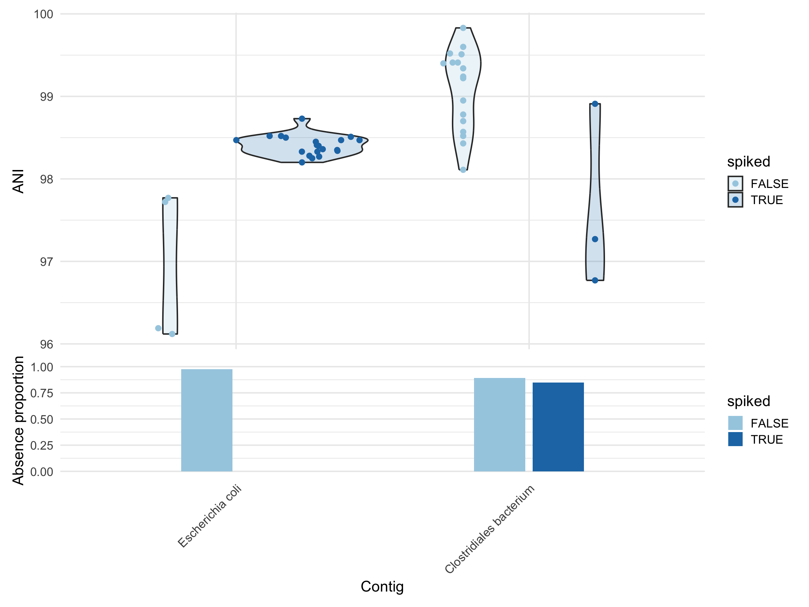

Show code
save_path = "output_rds/spike_ecoli_zib_p_95.rds"
if(file.exists(save_path)){
fit_zib_95 <- readRDS(save_path)
} else {
system.time({
fit_zib_95 <- glmZiBFit(d_p95, design, nthreads = 10)
})
saveRDS(fit_zib_95, save_path)
}
plot_manhattan(fit_zib_95, taxonomy = tax_95, method = "HMP", tax_levels = c("Phylum", "Order", "Class", "Genus"))! # Invaild edge matrix for <phylo>. A <tbl_df> is returned.
! # Invaild edge matrix for <phylo>. A <tbl_df> is returned.
! # Invaild edge matrix for <phylo>. A <tbl_df> is returned.
! # Invaild edge matrix for <phylo>. A <tbl_df> is returned.Warning: Using `size` aesthetic for lines was deprecated in ggplot2 3.4.0.
ℹ Please use `linewidth` instead.
ℹ The deprecated feature was likely used in the strainspy package.
Please report the issue at <https://github.com/gtonkinhill/strainspy/issues>.
Show code
plot_volcano(fit_zib_95, label = T)Found 487 tophits for spikedTRUE at alpha = 1 using holm 
Show code
plot_ani_dist(d_p95, phenotype = 'spiked', contigs = top_hits(fit_zib_95, alpha = 0.05)$Contig_name, show_points = T, plot_type = 'violin')Found 2 tophits for spikedTRUE at alpha = 0.05 using holm Warning: Removed 310 rows containing non-finite outside the scale range
(`stat_ydensity()`).